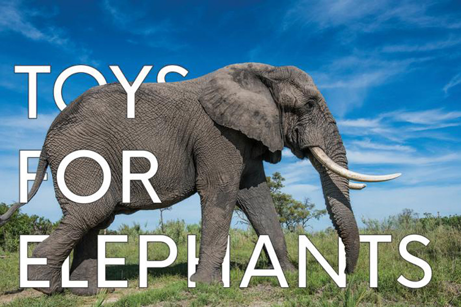
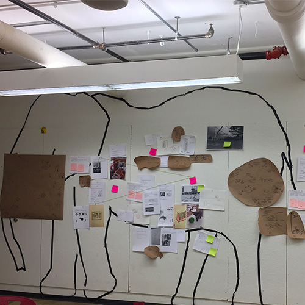
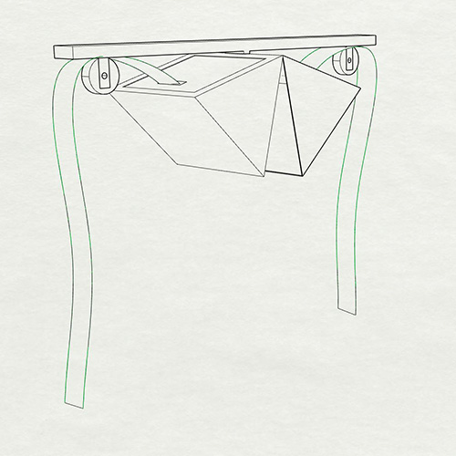

A collaborative toy for elephants in captivity
- Table For Two
concept | research | prototype | fabrication
Advisor: Sara Black (Department of Sculpture, SAIC), Peter J Zerillo (Department of Design Objects, SAIC)
Collaborator: Bao Rong, Saiyyamee Narendra Surana, Colin Forsyth
Table For Two is a collaborative installation designed for elephants in captivity, giving them the autonomy, and encouraging species-specific behaviors, for example social interaction and play behavior. Most elephants in captivity are taken from the wild, and kept in a confining area, such as a zoo, circus, or camp.1 Elephants typically have very strong social bonds within and among their family groups.2 The traumatic in captivity experience disturbed their social behavior which they normally learn from a family. Our project offers an experimental approach for elephants in the sanctuary, functions as an encouragement tool for elephants to be collaborative. Especially during the winter time, elephants spend most of their time inside the barn where has less space and limited activities. Table For Two was initiated in respond to the social, cognitive and sensory need of our users, with consideration toward sustainable material choices, and an ‘nonanthropocentric’- driven thinking.
The project proceeded along the cross-disciplinary course Design for Nonhuman Kinds: Toys for Elephants led by Sara Black and Peter J Zerillo at the School of the Art Institute of Chicago. In this course, we, the human designers were challenged to think “outside the human” to design and build cognitive tools to enrich the lives of the lives of elephants in captivity. Through the spring 2019 till the summer, we worked with scientists, sanctuary staff, as well as contemporary theorists to study elephant subjectivity, and travelled to an Elephant Scantuary, the home of African and Asian elephant herds.
method
research + field trip
A visit to the Discovery Center at The Elephant Sanctuary. Learning the history of the santuary and background story of each elephant resident before they came here.
A presentation given by elephant researcher, Joyce Poole who has studied the social behavior and communication of elephants for over 40 years.
Nicole Weber, staff at the sancutuary, explained to us the structure and design of the barn and how they gave daily care (weight/ height measurement, teeth check, manicure)to the elephants.

Nicole Weber, staff at the sancutuary, introduced us the "toys" that they designed for the elephants.

A hand-on experience of fixing elephants' toys to have a feeling of larger than human size toy, and an understanding of the importance of durablility and safety precaution.
design + prototype

First round of brainstorm, a collective effort from the whole class. We grouped similar concepts into several categories.
Based on the category, concepts got refined. We tried to have a well-balanced spectrum of project ideas that satisfied the need of elephants in the sanctury.
A concept of focusing on the social need of the elephants was formed.
A variation of prototype was made to test out the way of interaction and reward system.

A render image of refined prototype with a more robust hanging struture and feeding mechanism.
A full scale wooden prototype, having a mesh as the bottom layer. It allows the elephants to smell the food inside, and enables some food falling when only one elephant is interacting with it.
fabrication
Rong and Saiyyamee were setting up the welding station. Our first weld for this project.
With the great help of Daniel Jacob Hellwarth, who had given our group brilliant inputs on problem solving and metal working.

We customized a 48 inches hindge for the top connection of the two food-holding structure. In this picture, I was grinding off some of the extra weld for a smoother movement.
Two seperated parts finally came into one full piece.

Attached with the hanging structure, added pully system with firehoses as the interaction trigger, Table For Two was ready for user testing.
installation + user testing
Elephant are able to lift 700,000 pounds, for a safer test, sanctuary staff Joseph Rizzo recommended an implement of a break-away pin. We cut the firehose in half and added one grommet on each side close to the edge, connected with ropes, which based on Joe's experience, equals 300lbs.
Table For Two was designed to be hang in between two sections of the barn to two elephants to interact. The image shows it being lifted by a forklift towards the ceiling of the barn.
After Table For Two was secured on the ceiling with two beam clamps, Joe attached the rest of the firehose on a scissor lift.

Function testing. By pulling down both firehoses at the same time, the two side open up.
We prepared food to put inside as a sensory stimulation for elephants to activate the installation.